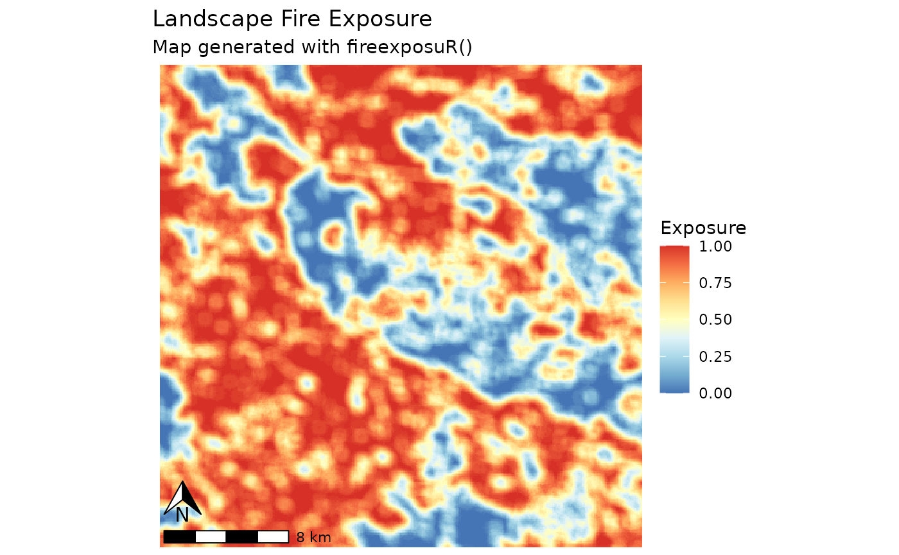
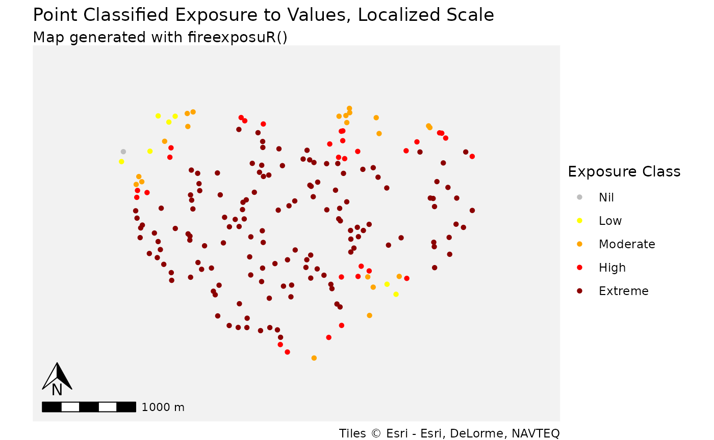

Usage example
DOCUMENTATION IN DEVELOPMENT
This is a basic example which shows a workflow to assess wildfire exposure to a community using multiple functions from the fireexposuR package. The package automates the methods within various research products which can be accessed through the following links:
Data preperation
First, some example data will be generated for an imaginary town somewhere in the middle of Alberta.
The hazardous fuel information is reflective of the area, but the area of interest is not an actual community.
# load terra for spatial data funtions
library(terra)
#> terra 1.8.5
# read example hazard data
hazard_file_path <- "extdata/hazard.tif"
hazard <- terra::rast(system.file(hazard_file_path, package = "fireexposuR"))
# read example polygon geometry for area of interest boundary
geom_file_path <- "extdata/polygon_geometry.csv"
geom <- read.csv(system.file(geom_file_path, package = "fireexposuR"))
# use geometry to make an area of interest polygon
aoi <- terra::vect(as.matrix(geom), "polygons", crs = hazard)
# generate random points within the aoi to represent values
points <- terra::spatSample(aoi, 200)Compute exposure
Now, we will use the hazard data to compute the exposure to long-range ember transmission.
library(fireexposuR)
exposure <- fire_exp(hazard, tdist = "l")
#> Warning in rgl.init(initValue, onlyNULL): RGL: unable to open X11 display
#> Warning: 'rgl.init' failed, will use the null device.
#> See '?rgl.useNULL' for ways to avoid this warning.Visualize exposure
Once we have an exposure raster the rest of the package functions can
be used to visualize it in different ways. For a landscape, we can map
exposure with a continuous scale with
fire_exp_map_cont():
fire_exp_map_cont(exposure)
We can also see how that exposure is distributed within the built
environment with exposure classifications in an area of interest with
fire_exp_map_class().
fire_exp_map_class(exposure, classify = "local", aoi)This map gives us a better understanding of areas of the town that
could be fire entry points. We can also summarize the area with
fire_exp_summary() if we want to know the proportional
distributions of each class.
fire_exp_summary(exposure, classify = "local", aoi)
#> class npixels prop aream2 areaha
#> 1 Nil 2 0.002372479 20000 2
#> 2 Low 33 0.039145907 330000 33
#> 3 Moderate 102 0.120996441 1020000 102
#> 4 High 132 0.156583630 1320000 132
#> 5 Extreme 574 0.680901542 5740000 574We also have data for the values within the built environment, for which we can map or summarize in a table as well.
# extract exposure to the points feature
points_ext <- fire_exp_extract(exposure, points)
# visualize the extracted data in a summary table
fire_exp_extract_vis(points_ext, classify = "local")
#> scale method class n prop
#> 1 local Point Nil 1 0.005
#> 2 local Point Low 7 0.035
#> 3 local Point Moderate 21 0.105
#> 4 local Point High 30 0.150
#> 5 local Point Extreme 141 0.705
# visualize the extracted data in a map
fire_exp_extract_vis(points_ext, classify = "local", map = TRUE)
Directional vulnerability
Our make believe town may also wish to assess the directional vulnerability to wildfire towards their community. This assessment identifies linear pathways of exposure from the landscape toward a value.
# assess directional vulnerability
transects <- fire_exp_dir(exposure, aoi)
# visualize directional vulnerability with a map
fire_exp_dir_map(transects, aoi)